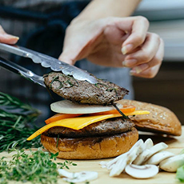
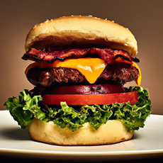

Tapioca Doce
compartilhe sua receita!

Maria Silva
maria.silva@gmail.com
Sobre o chef:
Nordestina orgulhosa, especialista em culinária regional com foco em receitas tradicionais e ingredientes locais.
SOBRE A RECEITA
Tapioca cremosa e doce, perfeita para o café da manhã ou lanche da tarde. Versátil e fácil de preparar, combina com frutas tropicais e pode ser adaptada com seus recheios preferidos.
Tapioca cremosa perfeita para café da manhã ou lanche, com frutas tropicais.
INGREDIENTES
- 2 xícaras goma de tapioca
- 1 lata leite condensado
- 1/2 xícara leite de coco
- 50g coco ralado
- 1 colher manteiga
- Fruta picada a gosto
Passo a Passo:
15 MIN
Mantenha o Fogo Baixo!
1
PASSO 1: Hidratar a goma
Em uma tigela, misture a goma de tapioca com água até cobrir. Deixe hidratar por 10 minutos. Escorra o excesso de água.
MÍDIA:


Comentários:
Tutoriais:
Ivete Gaudéria
12 de junho ás 10:50
@ivete2
Anciosa para experimentar.
Ivete Gaudéria
12 de junho ás 10:50
@ivete2
Anciosa para experimentar.
Ivete Gaudéria
12 de junho ás 10:50
@ivete2
Anciosa para experimentar.